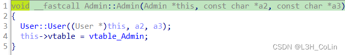

buu047-cmcc_simplerop
和上一道题的思路完全相同。
1 | from pwn import * |
buu048-picoctf_2018_buffer overflow 2
1 | from pwn import * |
buu049-xdctf2015_pwn200
1 | from pwn import * |
buu050-bbys_tu_2016
1 | from pwn import * |
buu051-mrctf2020_easyoverflow
连上之后输48个无效字节+‘n0t_r3@11y_f1@g’
buu052-wustctf2020_getshell_2
这道题只能溢出到返回地址+4字节的地方，直接修改返回地址到system函数的话参数写不进去，所以利用shell函数返回到指令’call _system’的地方，在后面就可以写函数参数’sh’（截取/bbbbbbbbin_what_the_f?ck__–??/sh的最后两个字节）了。
1 | from pwn import * |
buu053-[ZJCTF 2019]Login
第一道C++ pwn题。这也是我第一次认真在做一道C++ pwn的题目。
当然首先，我们需要会逆向C程序。C是C的超集，有很多C中没有的东西。其中最为重要的就是类与对象的识别了。
在这一题中，程序的符号表貌似没有被删除，我们可以看到IDA为我们分析出来的各种函数名与类名称。
其中容易发现程序中定义了两个类：User和Admin，而且似乎有三个main中定义的lambda函数。
程序中无法查看User类的具体结构，因此我们需要手动创建User类结构体，在IDA的Structures窗口中定义：Ins快捷键创建结构体，Del删除结构体，D/A/*创建结构体成员（常用D），N修改成员名，U删除成员。如下图：（具体为什么要这样定义看下面的分析）
通过User类的构造函数发现，构造函数在User，User+8，User+0x58处进行了赋值操作，这里的后面两个均是使用strncpy函数赋值，因此判断是字符串。第一个声明赋值指向的是这样一个结构，有两个函数指针，判断是User类的虚函数表，因为C++类的虚函数表通常都是放在类的最开头位置。可以看到User类中定义了两个虚函数get_password和shell。使用快捷键Y可以修改参数的类型，修改为合适的类型之后，反汇编出来的代码中就不会有一大堆强制转型了，看上去舒服很多。
又通过User类的get_password方法可以判断出后面两个大小为0x50的字符串中到底哪个是用户名哪个是密码。使用快捷键N可以修改参数或变量的名字，修改之后的User类构造函数如下图：
另外，在main函数中发现了login变量，其属于User类，且位于bss段中，判断是User类全局变量对象。我们将bss段中的这个对象修改类型发现大小正好符合，说明我们之前定义的User类结构是正确的。
再看一下Admin类的构造函数，发现其调用了User类的构造函数，因此判断Admin类是User类的子类。

从Admin类虚函数表中含有User类函数也可以说明Admin类是User的子类，且Admin类覆写了User类的shell方法，打开发现User类的shell没有任何作用，而Admin类的shell方法就是直接执行’/bin/sh’，是一个后门。而get_password类没有覆写，在User类中仅仅是用了virtual声明而已。
现在，我们已经将程序中主要的类、对象分析完毕，main函数的前半部分我们可以读懂了。
在main函数中，实例化了一个Admin对象，用户名为admin，密码为2jctf_pa5sw0rd。然后接受用户的输入设置全局User类对象的用户名和密码。
然后main函数用lambda函数做了一些什么事情，我们进入password_checker的某个函数看一下。
这个函数进行密码输入的比较，如果输入密码正确就执行exec函数指针指向的函数。
根据这个函数的声明，推测password_checker应该是一个结构体，其中包含了后面的lambda函数（注意这个函数应该是一个定义于password_checker结构体中的lambda函数，注意password_checker与lambda函数之间是以::连接）
在password_checker函数中发现了checker结构体的赋值操作，password_checker中只有这一个函数指针存在。
因此这一段代码原本的作用是：检查密码是否输入正确，如果正确则执行greeting_func函数：
但是经过实地运行发现，在lambda函数中会发生段错误，错就错在exec函数指针上。原本指针的值应为0x400A90，但是执行到这里的时候发现已经被改成了0x400090。
进一步跟踪调试发现，是strip_newline函数自动识别换行符（ASCII码为0xA），然后给这个地址错误地修改了，变成了一个无效的值。
这给了我们提示：strip_newline是在lambda函数中调用的，但是却能够修改exec函数的地址，通过调试我们不难发现，exec是一个指针，通过main函数调用password_checker函数获取，但是这是password_checker的局部变量，其地址应该在main函数栈帧的低地址处（main函数实际上没有栈帧，这里类比其他函数的栈帧方便理解），也就是main函数执行时esp的低地址处，而调用其他函数时这里的地址自然就有可能会受到影响。由此可见，如果我们输入密码的时候修改这里的地址值到Admin类的shell函数地址，就能够拿到shell了。
因此，本题的漏洞点在于返回局部变量的值，属于逻辑错误。子函数返回到父函数的返回值不应该是子函数局部变量的值。漏洞本身不难，但是对于逆向C++而言还是一次很好的训练与学习。
exp：
1 | from pwn import * |
尝试使用CLion还原出程序的源代码：（C++基础不扎实，尽量还原）
1 |
|